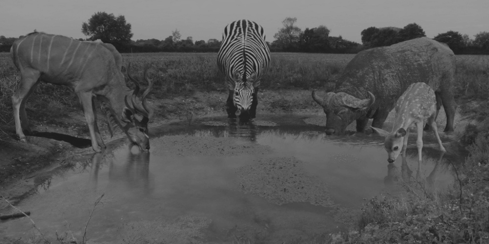

This article records the preliminary understanding of what data lake is and Why is it Used.
Concept of Data Lake
What is the concept of a data lake? Generally speaking, the data generated by an organization is maintained in a storage platform, which we called the "data lake".
I personally think that the data lake should be an evolving and scalable infrastructure for big data storage, processing and analysis. To achieve full acquisition, full storage, multi-mode processing and full life cycle management of any source, any scale, and any type of data, It must have interaction and integration with various external heterogeneous source systems, making it a goto place for any data in an organization.
The data sources of a lake are diverse. Some may be structured data, some may be unstructured data, and some may even be binary data.The data can be of the form of batch or streaming form. As the lake accepts data from various sources it can preserve both the original data and also be used for lineage of data transformations
Data Engineers or Transformation Engineers stand at the entrance of the lake,
using equipments check the water quality, and pump water out of the lake.
The Lake can serve as a staging area for the data warehouse.
Data scientists or Analysts use the lake for discovery and ideation. They extract value from the data lake through machine learning.
In summary, the data lake has four main characteristics -
Store raw data
The source of these raw data is very rich.Support multiple computing models
Data Management capabilities
Flexible underlying storage
LEARN, SHARE AND GROW